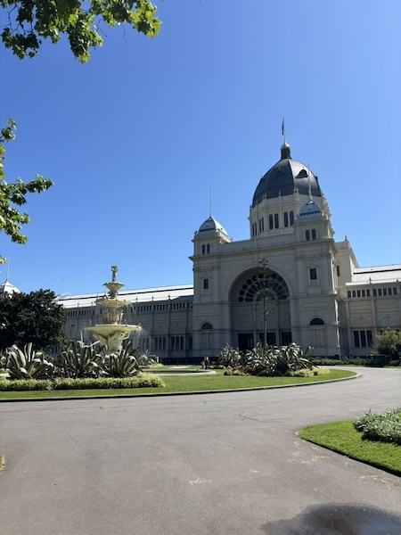
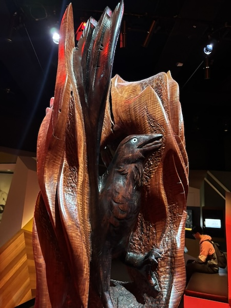
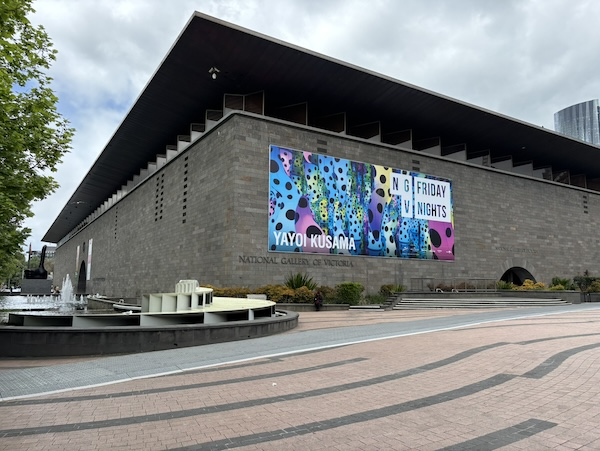
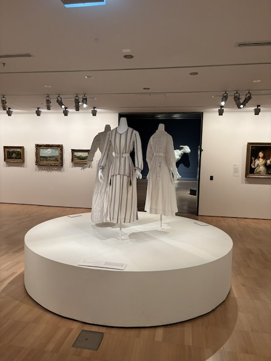
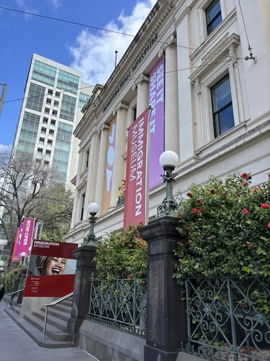
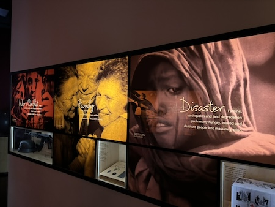

Museums I visited in Melbourne
Museum of Melbourne
I came here to learn about the First Nations people, otherwise known as Aboriginies.
Statue depicting First Nation story
National Gallery of Victoria (NGV)
I enjoyed seeing all types of art (painting, sculpture, clothing, furniture, drawing, etc.) from Asia, Europe, Australia.
Melbourne Immigration Museum
We saw so many different people and different foods in Melbourne. I wanted to know who they are and where they may have come from.
